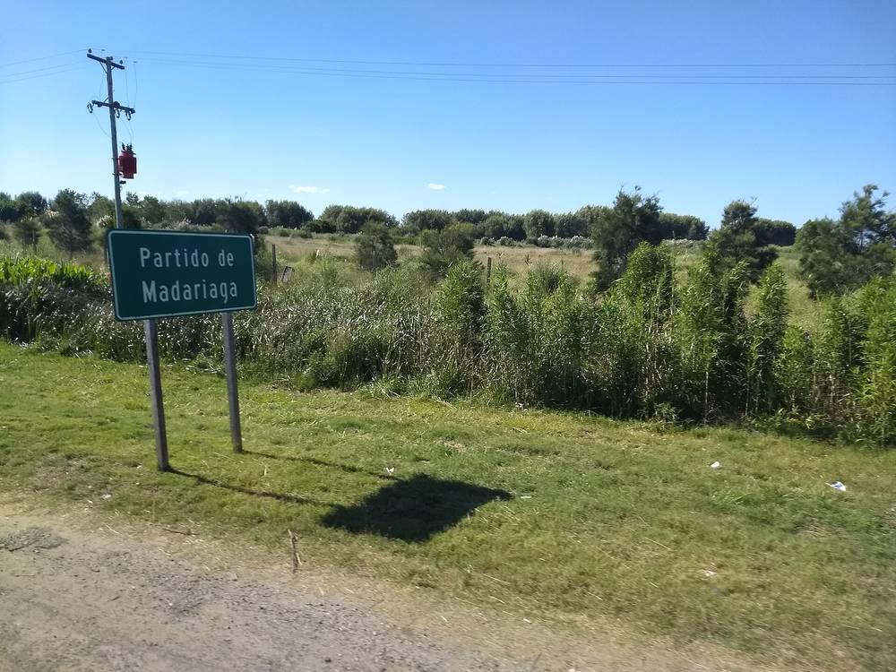

아르헨티나 헤네랄 마다리아가 전력협동조합, 조합원 총회서 1MW 태양광 발전소 만장일치 승인…도시 낮 시간 전력 소비 20% 직접 생산

패널 1,620장에 땅 1~1.5헥타르, 넓힐 여지 두고 3헥타르 이상 확보 추진…시 소유 부지 협의 중, 사 오던 전기 줄여 아낀 돈은 모두 서비스 개선에 재투자
아르헨티나 부에노스아이레스주 헤네랄 마다리아가의 전력협동조합(COEMA)이 정기 조합원 총회에서 설비 용량 1MW 태양광 발전소를 짓는 사업을 만장일치로 승인했다. 조합은 지금 도시에 공급하는 전기를 배전사업자에게서 사 오는데, 이 발전소가 도시 낮 시간 전력 소비의 20%를 채우고 나머지 80%는 지금처럼 사 오게 될 것으로 추산했다. 계획은 태양광 패널 1,620장을 까는 것으로, 설치에는 1~1.5헥타르면 되지만 앞으로 넓힐 것을 생각해 최소 3헥타르의 땅을 확보하려 한다. 부지는 시 소유 땅에 짓는 방안을 시와 깊이 협의하고 있으며 시공을 맡을 업체 기술진이 이미 그 땅을 살펴봤지만, 사업비와 착공 시기는 공개되지 않았다. 총회에서 조합원들은 기술·비용·재원·기대 효과를 묻고 자료 발표로 답을 들었고, 조합은 전기 구매에 쓰지 않게 될 돈을 모두 서비스 개선 투자에 돌리겠다고 밝혔다. 카를로스 다게레(Carlos Daguerre) 지배인은 "여느 때와 다른 총회였다"며 만장일치는 지지이자 책임인 만큼 공사를 실현할 절차를 밟겠다고 말했다.
시민에너지 관점
부에노스아이레스주는 10월 30일 배전 협동조합이 조합원에게 공급할 재생에너지를 직접 생산할 수 있게 한 법 15.665를 공포했고, 같은 주의 마다리아가 조합원들은 총회 표결로 1MW 발전소를 스스로 정했다. 작은 협동조합이 발전소 투자를 감당하겠느냐는 우려가 있지만, 조합원이 기술·비용·재원을 직접 따져 묻고 만장일치로 결정했다는 것은 이용자가 곧 소유자인 구조가 투자 판단의 책임까지 지역 안에 둔다는 뜻이다. 사 오던 전기를 줄여 아낀 돈이 외부 주주의 배당이 아니라 조합 서비스로 돌아가는 것도 지역 소유이기에 가능한 일이다. 국내에서도 공공 부지를 내주는 지자체와 주민 협동조합이 짝을 이뤄, 주민이 총회에서 직접 정하고 이익을 지역에 다시 쓰는 발전소를 늘려 가야 한다.
출처: El Mensajero de la Costa 2026-10-30 표기 없음 원문 보기
출처: El Fuerte Diario 2026-11-03 표기 없음 원문 보기
アルゼンチン・ヘネラル・マダリアガ電力協同組合、組合員総会で1MW太陽光発電所を全会一致で承認…町の昼間の電力消費の20%を自ら生産
パネル1,620枚で用地1〜1.5ヘクタール、拡張を見込み3ヘクタール以上の確保を目指す…市有地で協議中、購入電力を減らして浮いた資金は全額サービス改善に再投資
アルゼンチン・ブエノスアイレス州ヘネラル・マダリアガの電力協同組合（COEMA）が、通常組合員総会で設備容量1MWの太陽光発電所を建設する事業を全会一致で承認した。組合は現在、町に供給する電力を配電事業者から購入しているが、この発電所で町の昼間の電力消費の20%をまかない、残る80%はこれまで通り購入することになると試算した。計画では太陽光パネル1,620枚を設置し、設置には1〜1.5ヘクタールで足りるが、将来の拡張を見込んで少なくとも3ヘクタールの用地を確保したい考えだ。用地は市有地に建てる案を市と踏み込んで協議しており、施工を担う企業の技術陣がすでにその土地を調べたが、事業費と着工時期は公表されていない。総会では組合員が技術・費用・資金・期待される効果について質問し、資料の発表で説明を受けた。組合は電力購入に使わなくて済む資金をすべてサービス改善の投資に回すとしている。カルロス・ダゲレ（Carlos Daguerre）支配人は「いつもとは違う総会だった」と述べ、全会一致は支持であると同時に責任でもあり、工事の実現に向けた手続きを進めると語った。
市民エネルギーの視点
ブエノスアイレス州は10月30日、配電協同組合が組合員に供給する再生可能エネルギーを自ら生産できるようにする法律15.665を公布し、同じ州のマダリアガの組合員は総会の採決で1MWの発電所を自ら決めた。小さな協同組合が発電所への投資を担えるのかという懸念はあるが、組合員が技術・費用・資金を自ら問いただし全会一致で決めたことは、利用者がそのまま所有者である仕組みが、投資判断の責任まで地域の中に置くことを意味する。購入電力を減らして浮いたお金が外部株主への配当ではなく組合のサービスに戻るのも、地域所有だからこそできることだ。韓国でも、公共用地を提供する自治体と住民協同組合が組み、住民が総会で直接決め、利益を地域で再び使う発電所を増やしていくべきだ。
出典: El Mensajero de la Costa 2026-10-30 記者名なし 原文を読む
出典: El Fuerte Diario 2026-11-03 記者名なし 原文を読む
阿根廷赫内拉尔马达里亚加电力合作社社员大会一致通过1MW光伏电站…自行生产全城白天用电的20%
1,620块光伏板需地1至1.5公顷，为日后扩建争取至少3公顷…正与市政府协商使用市属土地，减少购电省下的钱全部再投入改善服务
阿根廷布宜诺斯艾利斯省赫内拉尔马达里亚加的电力合作社（COEMA）在社员常会上一致通过了建设装机容量1MW光伏电站的项目。合作社目前向城市供应的电力从配电企业购入，据其估算，这座电站将满足全城白天用电的20%，其余80%仍照旧购买。按计划将铺设1,620块光伏板，安装只需1至1.5公顷土地，但考虑到日后扩建，合作社希望争取至少3公顷的用地。选址方面，合作社正与市政府深入协商在市属土地上建设，负责施工的企业技术人员已实地查看过该地块，但项目费用和开工时间尚未公开。会上社员们就技术、成本、资金来源和预期效益提出问题，并通过资料展示得到解答；合作社表示，不再用于购电的资金将全部投入改善服务。合作社经理卡洛斯·达格雷（Carlos Daguerre）说"这是一次不同寻常的大会"，并表示全票通过既是支持也是责任，合作社将推进落实工程所需的各项手续。
市民能源视角
布宜诺斯艾利斯省10月30日公布了第15.665号法律，允许配电合作社直接生产供应社员的可再生能源；同一省的马达里亚加社员则通过大会表决，自己决定建设1MW电站。有人担心小型合作社难以承担电站投资，但社员亲自追问技术、成本和资金后全票通过，说明用户即所有者的结构把投资决策的责任也留在了当地。减少购电省下的钱回到合作社服务，而不是变成外部股东的分红，这也只有在地方所有之下才能实现。韩国也应让提供公共用地的地方政府与居民合作社携手，多建由居民在大会上直接决定、收益再用于本地的电站。
来源: El Mensajero de la Costa 2026-10-30 未署名 查看原文
来源: El Fuerte Diario 2026-11-03 未署名 查看原文
Argentine electricity co-op in General Madariaga wins unanimous member approval for 1MW solar park to generate 20% of the town's daytime power use
1,620 panels on 1 to 1.5 hectares, with at least 3 hectares sought to allow expansion; talks under way on municipal land, and every peso saved on bought-in power to be reinvested in service
The electricity cooperative of General Madariaga in Argentina's Buenos Aires province, COEMA, has unanimously approved a plan at its ordinary general assembly to build a solar park with 1MW of capacity. The co-op currently buys the electricity it supplies to the town from a distribution company, and estimates that the park will cover 20% of the town's daytime consumption, with the remaining 80% still purchased as before. The plan calls for 1,620 solar panels, which need 1 to 1.5 hectares, but the co-op wants to secure at least 3 hectares to leave room for expansion. It is in advanced talks with the municipality to build on municipally owned land that engineers from the contractor have already inspected, though the project cost and construction timetable have not been made public. At the assembly, members asked about the technology, costs, financing and expected benefits and were answered with a presentation, and the co-op said all the money it no longer spends on buying power will go into improving its service. General manager Carlos Daguerre called it "a different kind of assembly", saying the unanimous vote is both backing and a responsibility and that the co-op will now take the steps needed to get the park built.
Citizen Energy View
Buenos Aires province promulgated Law 15.665 on October 30, allowing distribution cooperatives to generate renewable power for their own members, and in the same province Madariaga's members decided on a 1MW plant themselves by a vote of their assembly. There are doubts that a small co-op can handle a power plant investment, but members questioning the technology, costs and financing in person and then voting unanimously shows that when users are also owners, responsibility for the investment decision stays in the community. That the money saved on bought-in power returns to co-op services rather than to outside shareholders as dividends is possible only because of local ownership. Korea, too, should pair local governments that offer public land with residents' cooperatives to build more plants that residents decide on directly in their assemblies and whose returns are spent locally again.
Source: El Mensajero de la Costa 2026-10-30 No byline Read the original
Source: El Fuerte Diario 2026-11-03 No byline Read the original